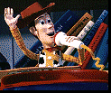

|
Toy Story
review by Carrie Gorringe
If, when you were a child, you
wondered whether or not your old toys ever suffered from sibling rivalry when a new toy
entered your life, wonder no more. Toy Story lets you know that just when you
thought you had exorcised all of your childhood guilt about being mean to your brothers or
sisters, you now have something else to worry about, such as a nocturnal strangulation
from that neglected Slinky toy stuffed in your crawl space. Woody the cowboy (Hanks) has
someone he'd like to strangle -- one Buzz Lightyear (Allen), a space explorer toy built
along the lines of Arnold Schwarzenegger. This cosmic interloper, although goodhearted and
as bright as a burnt-out light bulb, threatens Woody's heretofore undisputed leadership
position among the other toys; not only does Buzz have lots of flashing lights and
wonderful sound effects at his disposal, but he also believes that he is not a toy, an
opinion which gives him a great deal of influence over the other toys, including an
ascorbic Mr. Potato Head (Rickles), the winsome Little Bo Peep (Potts), a rather dimwitted
Slinky dog (Varney) and a T-Rex with a real inferiority complex (Shawn). No matter that
Woody snidely dismisses Buzz's ability to "fly" as little more than
"soaring with style"; from Woody's perspective, Buzz seems to be taking over
everything in his new owner's life, from Woody's influence right down to a change in
bedroom decor and the supreme position on the bed.
As a frontier lawman, Woody is not going to take this lying down on the
floor (upon which he's been abandoned), so he conspires to teach Buzz a lesson, and ends
up knocking him out the bedroom window. Unfortunately for Woody, the other toys don't
accept his explanation that the coup d'etat was an accident. Furthermore, they are angry
at him for exposing Buzz to the tender mercies of the next door neighbor, a sadistic
little post-Punk cretin named Syd, who is infamous for his torturing of toys (usually by
blowing them up). So, in the name of toy solidarity, not to mention saving his own hide,
Woody sets off reluctantly to rescue Buzz, and the adventures begin...
Toy Story is the result of a collaboration between Pixar, the
animation company founded by George Lucas and now owned by Apple Computer co-founder
Steven Jobs, and Disney. Director Lasseter used to work as a Disney animator. In 1988,
Lasseter won the Academy Award for Best Animated Short with Tin Toy, a
delightfully witty tale of Tinny, a toy solider, who is desperately trying to escape from
the clutches of an overeager baby for whom Tinny has suddenly become the object of
obsession. With the increase in computing speed and power, as well as Lasseter's
newly-found clout, a feature film animated entirely by computer was only a matter of time
(there had been some brief forays into computer animation by Disney in some key scenes in Beauty
and the Beast and The Lion King). An essential reason for its advance is its
lower cost; Toy Story cost only $30 million to make, as opposed to $45 million
for The Lion King. Nevertheless, it took 27 animators, 800,000 machine hours and
160 billion pixels to create the look and feel of Toy Story (it takes the storage
capacity of 1,000 CD-ROMs to hold all of the film's data). So Toy Story is a
victory for computing power.
And yet, for all of that high-tech prowess, the happiest news has to be
that Toy Story is also a victory for art and entertainment as well. Computer
animation can seem somewhat off-putting in its electronic rendering of surfaces and
shapes; everything seems to be too perfect and cold. With very few exceptions, the
animation in Toy Story should demolish any preconceived notions about the
potential of computer animation. Although it is a little disconcerting at first to look at
figures which are truly three-dimensional, the skill and care employed by Lasseter and his
crew in precisely mapping physical texture and movement soon draw the audience in (only
the human figures like Andy and Syd still look less-than-perfect, but making human beings
look human in animated films has always been a problem; look at any Warner Bros. cartoon
from the 30's 40's and 50's for proof of that). In addition, needless to say, Toy
Story is also well-served by wonderful voice contributions from all of the
principals, and a witty script with lots of in-jokes (such as Rickles' Mr. Potato Head
calling a hockey puck, well, a hockey puck). Toy Story gives that much-maligned
category known as "family entertainment" a badly-needed injection of energy,
because all ages will enjoy it.
|
[Shared Documents/General/Website/mediabar/mb.html]
|